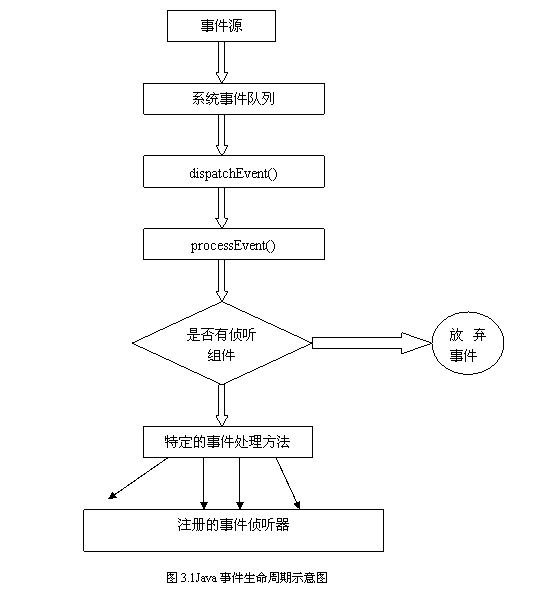

作者: 宋荆汉 出处:IBM中国
阅读提示：目前在一些Java应用程序的GUI测试工具，可以提供捕获用户操作的能力并在代码被修改之后能够自动回放用户的操作。文章将分析Java的事件处理模型及其原理，介绍了基于事件源识别的捕获/回放所需要了解的关键技术并给出了两种实现方式。
目前在一些Java应用程序的GUI测试工具，可以提供捕获用户操作的能力并在代码被修改之后能够自动回放用户的操作。文章将分析Java的事件处理模型及其原理，介绍了基于事件源识别的捕获/回放所需要了解的关键技术并给出了两种实现方式。
1、 Java事件介绍
1.1什么是事件
首先我们来回答"什么是事件"这一基本问题。其实事件本身就是一个抽象的概念，他是表现另一对象状态变化的对象。在面向对象的程序设计中，事件消息是对象间通信的基本方式。
在图形用户界面程序中，GUI组件对象根据用户的交互产生各种类型的事件消息，这些事件消息由应用程序的事件处理代码捕获，在进行相应的处理后驱动消息响应对象做出反应。我们在GUI上进行叫化操作的时候，在点击某个可响应的对象时如，按钮，菜单，我们都会期待某个事件的发生。
其实围绕GUI的所有活动都会发生事件，但Java事件处理机制却可以让您挑选出您需要处理的事件。事件在Java中和其他对象基本是一样的，但有一点不同的是，事件是由系统自动生成自动传递到适当的事件处理程序。
1.2Java事件处理的演变
当Java的开发者开始解决用Java创建应用程序这一问题时，他们就认识到Java事件模型的必要性。下面对Java事件处理的发展做简要的概括。
在JDK1.0的版本采用用的事件模型，提供了基本的事件处理功能。这是一种包容模型，所有事件都封装在单一的类Event中，所有事件对象都由单一的方法 handleEvent来处理，这些定义都在Component类中。
为此，只有Component类的子类才能充当事件处理程序，事件处理传递到组件层次结构，如果目标组件不能完全处理事件，事件被传递到目标组件的容器。
JDK1.1是编程界的一次革命，修正了前面版本的一些缺陷，同时增加了一些重要的新功能如，RMI、JNI、JDBC、JavaBean。在事件模型上基本框架完全重写，并从Java1.0模型迁移到委托事件模型，在委托模型中事件源生成事件，然后事件处理委托给另一段代码。
从JDK1.2开始，引入了Swing包事件处理模型功能更强大，更加可定制GUI组件与他们相关联的支持类。在后面的版本基本保持了整个事件模型，但加入了一些附加事件类和接口。在1.3版本开始引入Rebot类，它能模拟鼠标和键盘事件，并用于自动化测试、自动运行演示、以及其他要求鼠标和键盘控制的应用程序。
我们把JDK1.0事件处理模型成为Java1.0事件模型，而从jdk1.1后的版本事件处理模型称为Java 2事件处理模型。
2、Java 2事件处理模型
在Java1.0事件处理模型中事件处理是以如下方法执行的。deliverEvent（）用于决定事件的目标，目标是处理事件的组件或容器，此过程开始于GUI层的最外部而向内运作。
当按一个button时，如果检测到是该按钮激发的事件，该按钮会访问它的deliverEvent()方法，这一操作由系统完成。一旦识别目标组件，正确事件类型发往组件的postEvent()方法，该方法依次把事件送到handleEvent()方法并且等待方法的返回值。
"true"表明事件完全处理，"false"将使postEvent()方法联系目标容器，希望完成事件处理。
下面给一个实例：
import java.applet.*;
import java.awt.*;
public class Button1Applet
extends Applet{
public void init()
{
add(new Button("Red"));
add(new Button("Blue"));
}
public boolean action
(Enent evt,Object whatAction)
{
if( !( evt.target
instanceof Button))return false;
String buttonlabel=
(String)whatAction;
if(buttonlabel=="Red")
setBackground(Color.red);
if(buttonlabel==" Blue")
setBackground(Color.blue);
repaint();
return true;
}
}
在Java2处理事件时，没有采用dispatchEvent()-postEvent()-handleEvent()方式，采用了监听器类，每个事件类都有相关联的监听器接口。事件从事件源到监听者的传递是通过对目标监听者对象的Java方法调用进行的。
对每个明确的事件的发生，都相应地定义一个明确的Java方法。这些方法都集中定义在事件监听者（EventListener）接口中，这个接口要继承 java.util.EventListener。 实现了事件监听者接口中一些或全部方法的类就是事件监听者。
伴随着事件的发生，相应的状态通常都封装在事件状态对象中，该对象必须继承自java.util.EventObject。事件状态对象作为单参传递给应响应该事件的监听者方法中。发出某种特定事件的事件源的标识是：遵从规定的设计格式为事件监听者定义注册方法，并接受对指定事件监听者接口实例的引用。
有时，事件监听者不能直接实现事件监听者接口，或者还有其它的额外动作时，就要在一个源与其它一个或多个监听者之间插入一个事件适配器类的实例，来建立它们之间的联系。我们来看下面一个简单的实例：
import javax.swing.*;
import java.awt.*;
import java.awt.event.*;
public class SimpleExample extends JFrame
{
JButton jButton1 = new JButton();
public SimpleExample()
{
try {
jbInit();
}
catch(Exception e)
{
e.printStackTrace();
}
}
public static void
main(String[] args)
{
SimpleExample simpleExample
= new SimpleExample();
}
private void jbInit()
throws Exception {
jButton1.setText
("jButton1");
jButton1.addActionListener(new SimpleExample_jButton1_actionAdapter(this));
jButton1.addActionListener(new SimpleExample_jButton1_actionAdapter(this));
this.getContentPane().add
(jButton1, BorderLayout.CENTER);
this.setVisible(true);
}
void jButton1_actionPerformed
(ActionEvent e)
{
System.exit(0);
}
}
class SimpleExample_jButton1_
actionAdapter implements
java.awt.event.ActionListener
{
SimpleExample adaptee;
SimpleExample_jButton1_actionAdapter
(SimpleExample adaptee)
{
this.adaptee = adaptee;
}
public void actionPerformed(ActionEvent e)
{
adaptee.jButton1_actionPerformed(e);
}
}
3、事件捕获与回放
3.1 Java事件生命周期
Java事件和万事一样有其生命周期，会出生也会消亡。下图3.1给出了Java事件生命周期的示意图:

http://www.pconline.com.cn/pcedu/empolder/gj/java/0508/pic/05-08-24-java-1.gif